Operating Documentation
Direction 5193574-800, Rev# 22
LightSpeed 7.X Service Methods
Module Version 1.0, Version Date 4/22/10
Operating Documentation |
Locate and unpack the two monitors from the lean cart (see Illustration 1).
Illustration 1: Lean Cart Layout
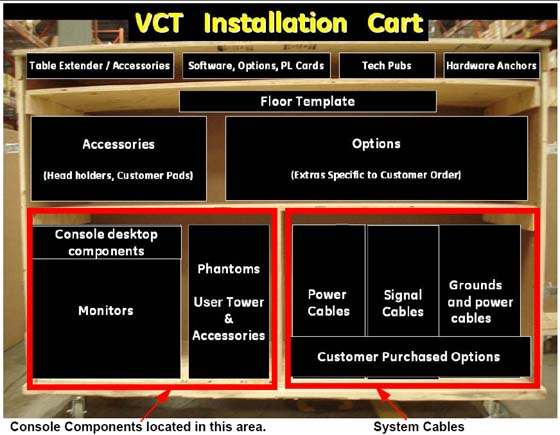
Carefully place the monitors on the console desktop.
Locate and unpack the media drive tower.
Place the media tower on the console desktop.
Locate and unpack the two monitors.
Carefully place the monitors on the console desktop.
Locate and unpack the SCSI drive tower.
Place the SCSI drive tower on the console desktop.
Illustration 2: GOC5 Global Console tabletop Component Placement
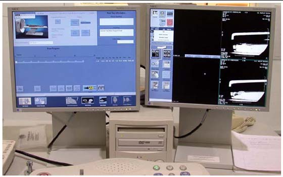
Route the keyboard cable under the SCIM, as shown in Illustration 3.
Illustration 3: SCIM control with keyboard cable routed through SCIM (actual components may vary in color and style)
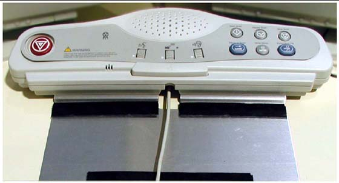
| ||||
| Potential for equipment damage Never connect a mouse or keyboard with the host computer powered “ON”. Doing so can destroy components within the host computer. | ||||
Connect the keyboard and mouse to the ports on the top of the console front bulkhead. The keyboard connects to the port on the right; the mouse connects to the left port (Illustration 4).
Illustration 4: Global Console Front Bulkhead, showing mouse, keyboard, barcode reader and trackball connections
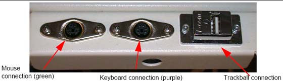
Connect the SCIM cable to the SCIM as shown in Illustration 5. (Note the cable routing.)
Illustration 5: SCIM bottom, showing cables and keyboard mounting bracket
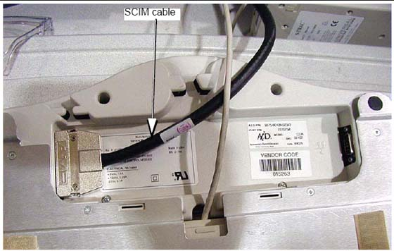
Make sure the SCIM connector fits snugly. Some plastic molding may need to be removed to allow the cable to fit properly.
Illustration 6: SCIM Connector Area
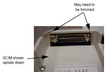
Select and install the proper keyboard overlay for your system: (1) with tilt or (2) without tilt.
Verify that none of the buttons get caught and stuck under the overlay. Pay close attention to the prescribed tilt button on systems with the tilt feature.
The keyboard should attach to the SCIM using the supplied Velcro strip and fit snugly against the SCIM when finished, as shown in Illustration 7.
Illustration 7: SCIM Connected to Keyboard with US English Tilt Overlay Installed
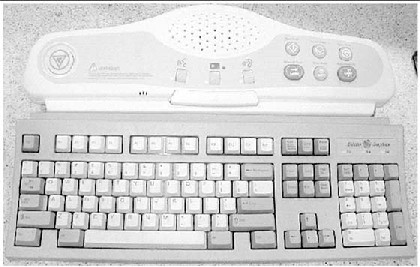
Illustration 8: SCSI Tower: Connections (left) and Optional Seismic Mounting Bracket (right)
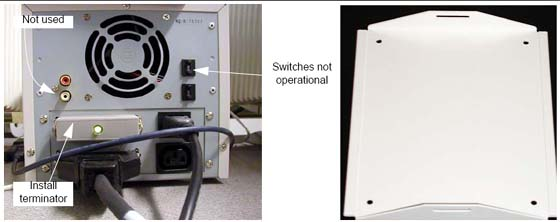
Connect the SCSI cable to the rear of the SCSI tower.
| NOTE: | The cable is included in the SCSI Cable Kit and is the same as the DASM cable. |
Connect the SCSI terminator to the rear of the SCSI tower.
Connect the power cable to the rear of the SCSI tower.
With the monitor and computer switched off, connect the video signal cable to the monitor’s video input.
| ||||
| Equipment Damage Possible Do not touch the video signal cable connector pins as this might bend them. When connecting the video signal cable, check the alignment of the HD15 connector. Do not force the connector in the wrong way, otherwise the pins might bend. | ||||
Connect the following cables:
SCIM
SCSI Cable
Template
Keyboard
Scan Monitor:
Video Cable
Power Cable
Cable Keeper
Display Monitor:
Video Cable
Power Cable
Cable Keeper
| NOTE: | A DARC video cable is shipped with the system. This is only to be connected when troubleshooting. Do not connect during normal installation. |
| ||||
| Console power is two-phase power. Outlet assignments are critical. | ||||
Connect the console power cable to the console power panel.
Connect console component power cords as listed in Table 1. Plug LAN cables into the rear bulkhead on the console.
Table 1: Console Component Connections
| M3 LAN CABLES | SIGNAL CABLES | POWER CABLES |
Hospital Network | J20 Cable | 208 VAC Power |
Gantry Base LAN | Dual Fiber DIP | #2 Ground |
VCT Cardiac |
| NOTE: | The DIP signal cable is keyed to only fit one way. “J” numbers increment from top to bottom and left to right. The console is shipped with all internal power cables connected to their assigned power slots. |
Plug cables into rear bulkhead on console.
Illustration 9: Console Rear Bulkhead
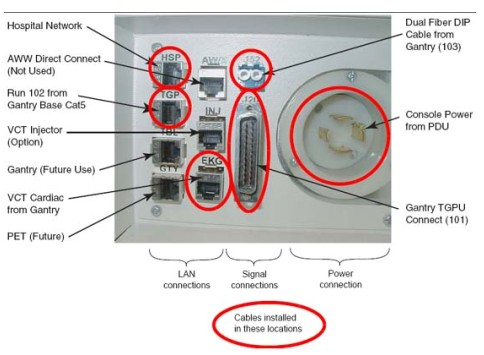
System cable connections are located on the rear of the console. Connect as shown in Illustration 10 below.
Illustration 10: GOC5 Console Power Connections
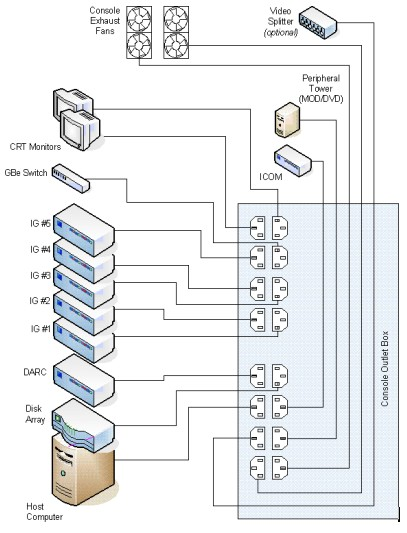
If you have a digital DASM to install, complete the following steps to connect it to the computer.
Turn the DASM over so you are looking at the bottom.
Set the DASM SCSI ID to 1.
Set the DASM termination to ON.
Illustration 11: DASM Bottom
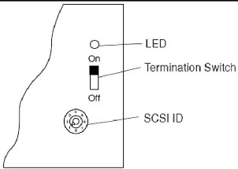
Set the RS232/RS422 switch to the RS232 position, for a digital DASM.
Refer to Illustration 12. Attach the SCSI cable supplied with DASM kit to the back of the DASM.
Illustration 12: Rear View of HP xw8000, Showing DASM SCSI Cable Connection
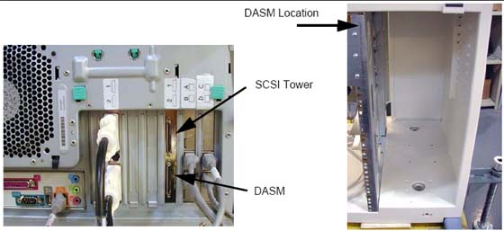
Attach the free end of the SCSI cable to the rear of the Host Computer (see Illustration 12).
Plug DASM power cord into J10 (or any open slot).
Attach remaining cable(s) from camera to DASM and install the DASM to the right of the slideout tray.
| NOTE: | See your Software Load Procedures manual for instructions on configuring cameras. |
| NOTE: | A signed deviation is required to install the modem option. |
If you have a modem to install, do it now. Place the modem on top of the intercom box and attach it with Velcro to the power supply.
Hook up the power, phone, and serial line as shown in the interconnect drawing. The drawing is located in the back cover of the console.
Illustration 13: Modem
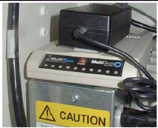
| ||||
| ESD can damage hard drives. Use proper ESD precautions when handling hard drives. | ||||
Install drives in the eight (8) slots shown in Illustration 14 as follows.
Using the thumb screws, remove the front cover. Use caution so you do not damage the tabs on the top edge or the small plates on the bottom edge.
Remove the cardboard shipping box with slots for eight drives on the right side of the console.
Install eight drives in the open slots. They snap into place.
Replace the box with the installed drives.
Using the thumb screws, replace the front cover.
Illustration 14: Hard Drive Installation
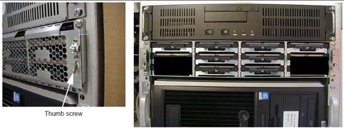